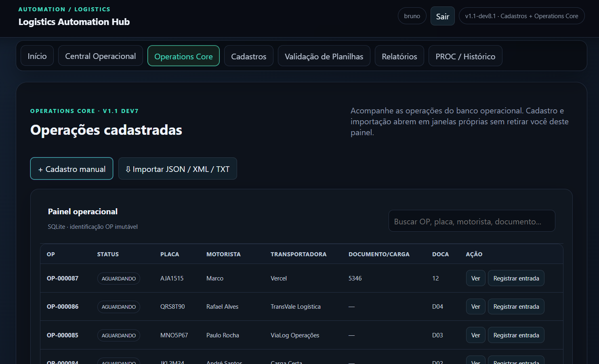
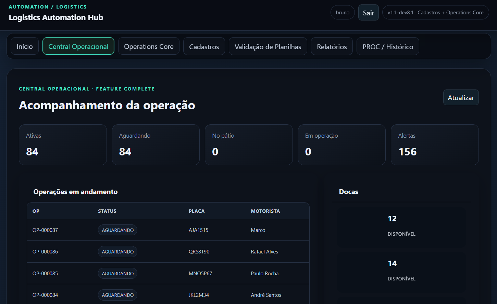
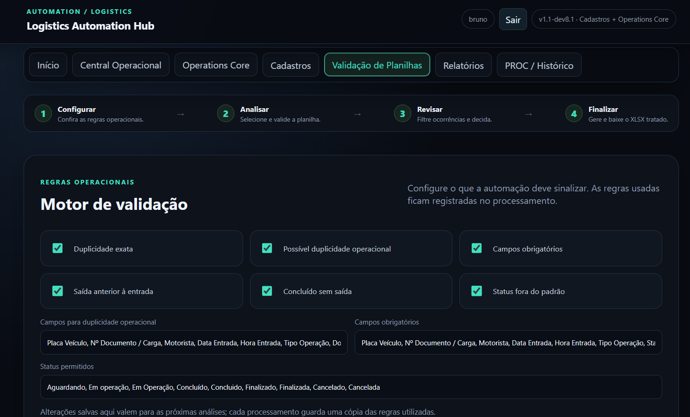
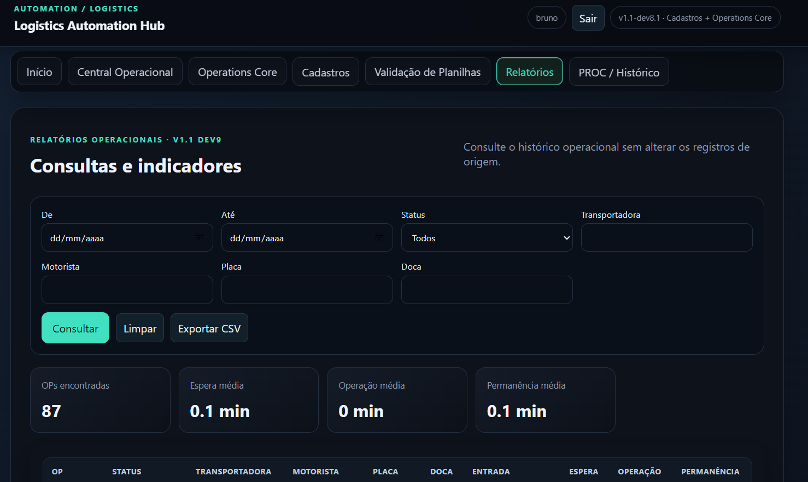

Operations Core
Cadastro, importação e gerenciamento das operações com identificação imutável.
CASE · V1.1 Stable
Plataforma local para transformar operações logísticas em um fluxo rastreável, estruturado e orientado por dados.
VISÃO GERAL
O projeto nasceu da necessidade de unir entrada de dados, qualidade, execução operacional e histórico sem inventar informações ausentes. A solução evoluiu para uma aplicação Windows local com banco persistente, workflow controlado e tratamento humano de ambiguidades.
Cadastro, importação e gerenciamento das operações com identificação imutável.
Estados controlados da chegada à conclusão, com eventos e horários rastreados.
Transportadoras, motoristas, veículos e docas reutilizáveis na operação.
Visão das operações ativas, docas, indicadores e alertas em um único painel.
Entrada estruturada com revisão humana antes de transformar dados em operações.
Filtros, tempos operacionais, exportação e rastreabilidade por PROC/HUB.
ARQUITETURA
Uma visão resumida das principais camadas e tecnologias utilizadas na solução.
INTERFACE
Capturas reais da versão homologada, mostrando o acompanhamento operacional, o motor de validação e os recursos de consulta da aplicação.




CÓDIGO & DISTRIBUIÇÃO
O código-fonte e a documentação estão disponíveis no GitHub. A versão homologada para Windows é distribuída separadamente pela Release V1.1 Stable.